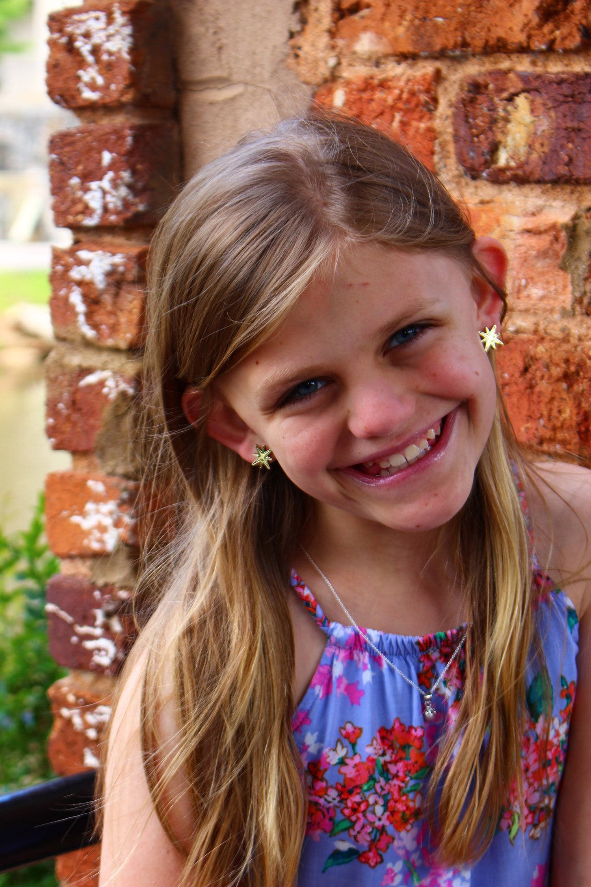

Kiersen
America Turner SyndromeKiersen is an energetic, compassionate preteen that loves life and meeting new people. Even though she struggles with school, she never gives up and works hard on all assignments! She is the first with an encouraging word and hug to anyone she sees upset or struggling!
Kiersen received a miracle in 2018 that touched her heart and she loves to share her story of triumph and courage in her daily walk with Turner Syndrome!
Get involved Back to all stories